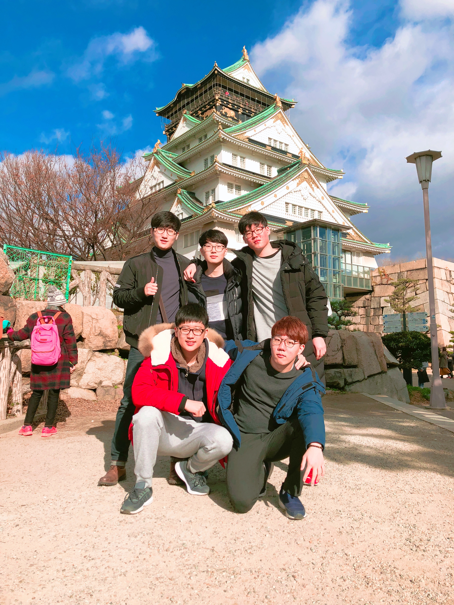

본 홈페이지는 등신들의 2018년 겨울방학 제 2회 해외여행 계획을 작성하기 위한 홈페이지 입니다. 
개요
지난 2018년 1월 2일~ 5일, 우리들은 오사카(Osaka),교토(Kyoto)를 방문하여 여행을 한 바 있다. 지난 여행은 상당히 충동적이었고, 자신에게 주어진 역할을 제대로 수행하지 않은 몇몇 한량들에 의해 무계획적으로 이루어졌었다. 이에 나는 다음 여행은 철저히 계획을 세우자는 결심을 했던 바가 있어 본 홈페이지를 제작하여 계획을 작성하고자 한다.